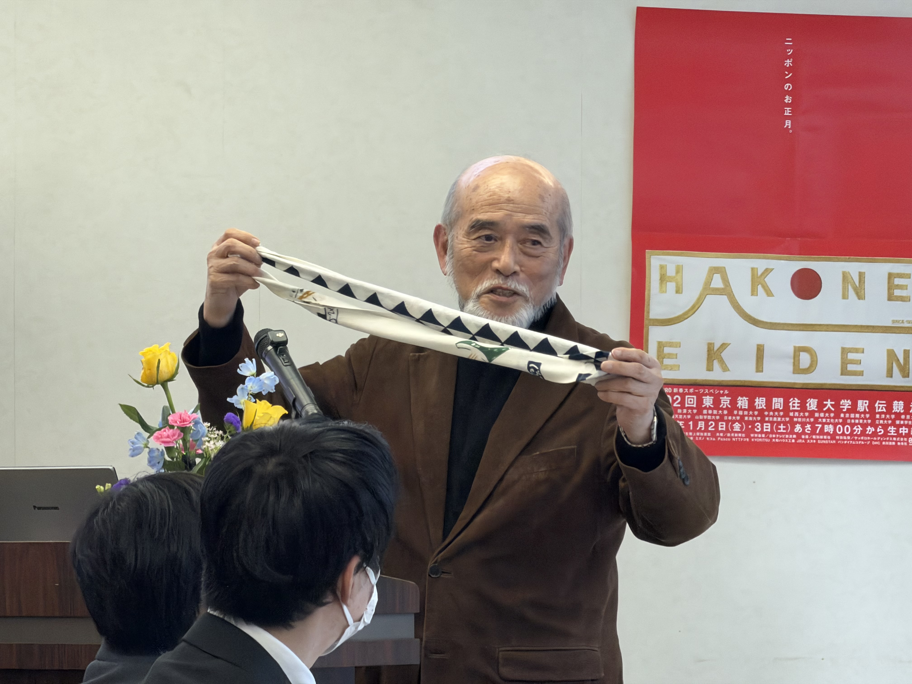
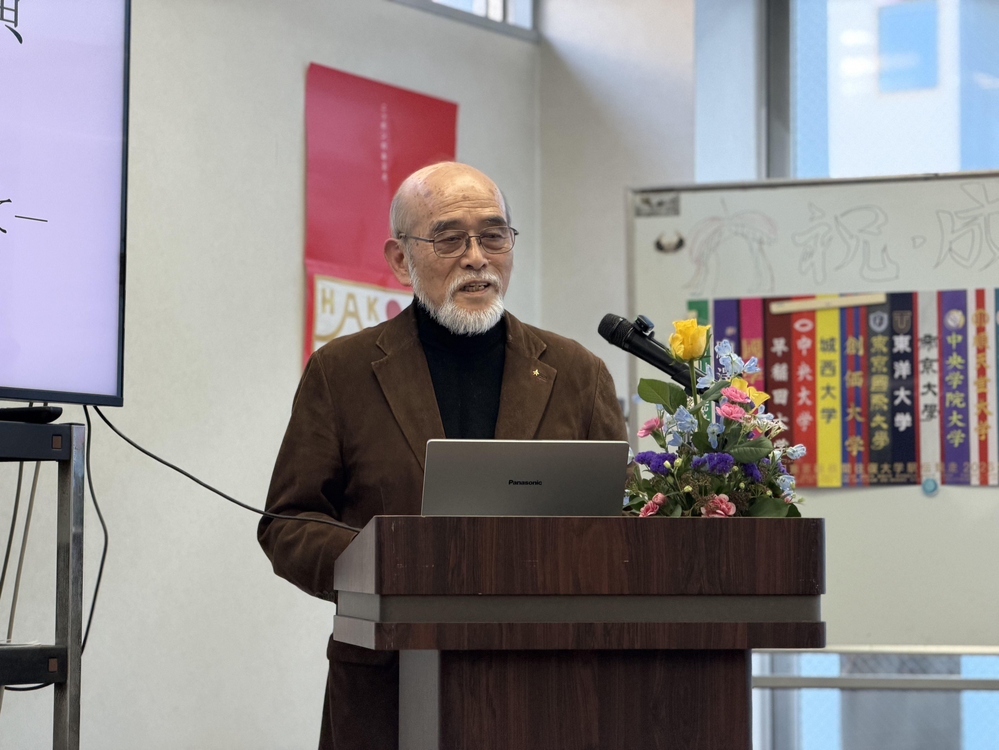
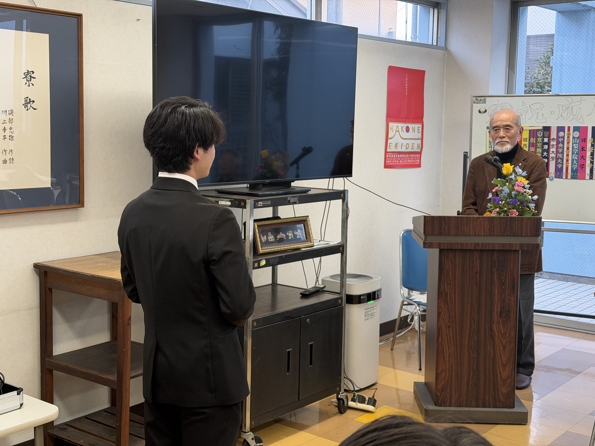

記念講演レポート：坂田信久氏が語った「箱根駅伝中継」の舞台裏

令和4年度「20歳を祝う会」第1部の記念講演では、日本テレビで長年スポーツ番組制作に携わり、箱根駅伝中継の礎を築かれた坂田信久氏をお招きしました。坂田氏はご自身の歩みとともに、「不可能」と言われた挑戦を現実に変えていく過程、そしてその中で得た教訓を、率直に語ってくださいました。
まず“襷”の話から――駅伝の象徴は、一本の紐
講演は、箱根駅伝の「襷（たすき）」の実物（再現）紹介から始まりました。襷は単なる布ではなく、区間ごとに走者が受け継ぐ“責任の受け渡し”そのものです。各大学が自校の襷を用意し、検査を経て公式に認められること、繰り上げとなった場合は主催側が用意した襷を使用すること、さらに「最終的には各校の襷でゴールさせたい」という配慮から中継所にもう一本の襷が置かれていることなど、普段は意識しにくい運用の工夫が丁寧に説明されました。
目に見える一本の襷の背後に、競技の伝統と運営の思想が積み重なっていることが、改めて実感される導入でした。

「スポーツを啓蒙する」――進路を変えた二つの出会い
坂田氏は学生時代、富山市で育ち、上京後は世田谷区赤堤の富山県学生寮で過ごされた経験を振り返られました。もともとは教育の道を考えていた中で、海外の著名な指導者の講演を聞き、「スポーツを広め、社会に根付かせるうえで、メディアが果たす役割は大きい」という視点に出会ったことが、人生の転機になったと語られました。
さらに、日本テレビ入社の報告に際して、当時の経営トップから「テレビは国民文化の担い手である」「先駆者精神を忘れるな」という趣旨の言葉を受け、以後の仕事の背骨になったとも述べられました。
「テレビ史上初の山岳ロード生中継」――“不可能”を“準備”で潰す
箱根駅伝との本格的な出会いは入社1年目の取材でした。当時の注目ランナーが故障を抱えながら走り、監督が将来を見据えて送り出したエピソードに強く心を動かされたことが、箱根駅伝を「伝えるべき競技」だと確信するきっかけになったそうです。
しかし当時、往復200km超の長距離、山間部の電波・中継網、ヘリコプター運用、年末年始の宿舎確保など、実現を阻む壁はあまりにも高く、社内でも「危険でできない」という反対が強かったといいます。そこで坂田氏が徹底したのは、勢いではなく、ひたすら現場で条件を洗い出し、代替案を含めて一つずつ不安を消していくことでした。
技術部門の仲間と共に箱根の山中を回り、中継が成立するポイントを探し、番組全体を束ねる総合演出担当には自ら人選のうえで理解を得た――この「人を選び、現場を踏み、根拠を積み上げる」姿勢が、企画を現実に変えた核心だったように思われます。
さらに印象的だったのは、放送を支えるための“仕組みづくり”です。全スタッフに配布される分厚いマニュアル（制作プラン、機材配置、注意事項、進行表など）を用意し、全体会議、リハーサル、本番へと、工程を積み上げていく。関係者が初対面で集まる大規模体制だからこそ、「各自が勝手に頑張る」よりも、「決めた手順を淡々と遂行する」ことが放送事故を防ぐ――この考え方は、現場の仕事の重みを率直に伝えるものでした。
講演の結論：「準備せよ」――そして、関わるすべての人への敬意
質疑応答では、「最大の危機は何だったか」「困難を一般化するとどう対処すべきか」という問いが投げかけられました。坂田氏の答えは明快でした。
結論は「準備せよ」です。思わぬ事態は起きるが、放送の直前に“危険な状態”が残っているのは論外であり、確信の持てない要素は切り捨て、必要なら翌年に回す。派手な武勇伝ではなく、地道な準備の積み重ねこそが、最終的に挑戦を成立させる――この姿勢が一貫していました。
また、「中継してあげているのではなく、中継をさせてもらっている」という言葉も、強く残ります。走者、関係者、沿道の応援、そして放送を支える全てのスタッフの思いを“運ぶ”ことが中継の意味であり、歴史と人を同時に伝えなければ箱根駅伝中継ではない、という視点は、長寿番組の倫理観として重みがありました。

青雲寮の私たちへ――大きな挑戦ほど、準備とチームで
箱根駅伝は、走者が襷をつなぐ競技です。しかし講演を通じて、襷をつないでいるのは走者だけではなく、企画・技術・運営・宿舎・進行など、裏方の積み重ねもまた“襷”の一部であることが見えてきました。
寮生活でも、行事運営や設備更新、広報活動など、派手さはなくとも「全員の生活を支える」仕事が多くあります。坂田氏の言葉を借りるなら、私たちもまた、目の前の課題に対して「準備で不安を消し、役割をつなぎ、成果を次につなぐ」ことが求められているのだと思います。
改めまして、坂田信久氏に心より御礼申し上げます。今回のお話が、20歳を迎えた皆さんはもちろん、寮生一人ひとりにとって、これからの挑戦を支える確かな指針になれば幸いです。